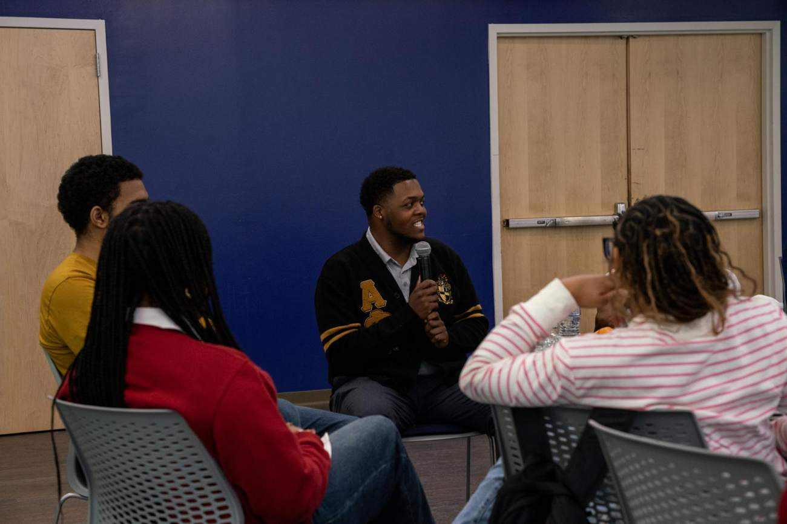

00Why it matters
The distance between talent and opportunity should not be measured by a ZIP code, a family connection, or who happens to answer an email.
Some students grow up with a parent who can make a call, a neighbor who knows a dean, a family friend who will read a résumé tonight. Others are every bit as talented and have to find each door on their own. That difference is not about ability. It is about access, and access can be built.
BRIDGE builds it with students. College students, close in age and experience to the students they serve, design the rooms they wish they had walked into: rooms where professionals stay after the panel, where peers make introductions, and where everyone leaves with a next step.
We are not asking anyone to rescue students. We are inviting institutions to help build fairer systems of opportunity, alongside the students already building them.

A student holds the mic.At Read the Room, college students moderated a panel of founders, authors and a law-school BLSA president.- A classroom becomes a committee room.At BRIDGE to Law & Policy, students drafted amendments and negotiated them in a mock committee.
 The next ones up.AU fellows spent the fall reading with and mentoring younger students at Annunciation Catholic School.
The next ones up.AU fellows spent the fall reading with and mentoring younger students at Annunciation Catholic School.